CODING AGENTS AS PIXEL WORLD MODELS
traex/DeepSeek-V4.1-Flash · dynamic_spatial_relationship_0031
点击播放 · 原生 RGB 像素
逐轮保存的候选
回放视频、检查图与代码变化。
每份候选均可单独播放。实际图片检查记录在下方工具轨迹中。
候选 01播放与检查图
点击播放 · 原生 RGB 像素
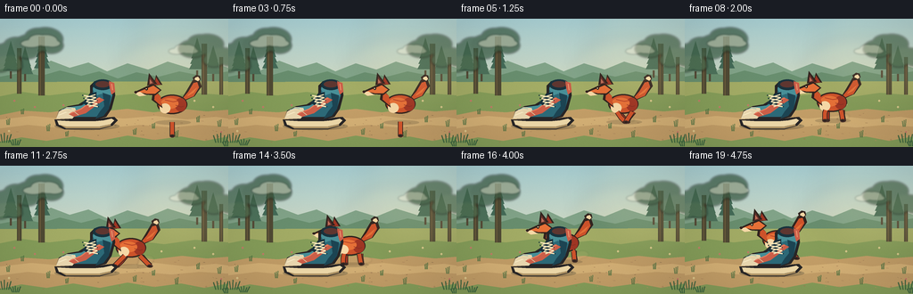
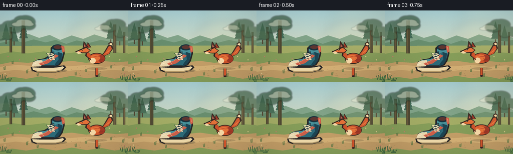
展开代码变化
--- 上一保存版本
+++ 本次保存版本
@@ -0,0 +1,515 @@
+from pathlib import Path
+import math
+
+import cv2
+import numpy as np
+from PIL import Image, ImageDraw, ImageFilter
+
+import artifact_io
+
+
+W, H = 256, 144
+N, FPS = 20, 4.0
+S = 4
+RNG = np.random.default_rng(31)
+
+
+def rgba(size=(W * S, H * S)):
+ return Image.new("RGBA", size, (0, 0, 0, 0))
+
+
+def sc(value):
+ return int(round(value * S))
+
+
+def pts(points):
+ return [(sc(x), sc(y)) for x, y in points]
+
+
+def ellipse(draw, box, fill, outline=None, width=1):
+ draw.ellipse(tuple(sc(v) for v in box), fill=fill, outline=outline,
+ width=sc(width) if outline else 1)
+
+
+def polygon(draw, points, fill, outline=None, width=1):
+ draw.polygon(pts(points), fill=fill, outline=outline,
+ width=sc(width) if outline else 1)
+
+
+def line(draw, points, fill, width=1, joint="curve"):
+ draw.line(pts(points), fill=fill, width=sc(width), joint=joint)
+
+
+def rounded_rectangle(draw, box, radius, fill, outline=None, width=1):
+ draw.rounded_rectangle(
+ tuple(sc(v) for v in box),
+ radius=sc(radius),
+ fill=fill,
+ outline=outline,
+ width=sc(width) if outline else 1,
+ )
+
+
+def vertical_gradient(top, bottom):
+ image = Image.new("RGB", (W * S, H * S), top)
+ pixels = np.asarray(image).copy()
+ for y in range(H * S):
+ t = y / (H * S - 1)
+ pixels[y, :, :] = tuple(
+ round(top[c] * (1 - t) + bottom[c] * t) for c in range(3)
+ )
+ return Image.fromarray(pixels, "RGB").convert("RGBA")
+
+
+def make_background():
+ sky = vertical_gradient((171, 211, 215), (241, 218, 170))
+ draw = ImageDraw.Draw(sky)
+
+ # Warm sun haze near the horizon.
+ haze = rgba()
+ hd = ImageDraw.Draw(haze)
+ for radius, alpha in ((65, 16), (48, 20), (30, 24)):
+ hd.ellipse(
+ (sc(194 - radius), sc(61 - radius * 0.64),
+ sc(194 + radius), sc(61 + radius * 0.64)),
+ fill=(255, 231, 164, alpha),
+ )
+ haze = haze.filter(ImageFilter.GaussianBlur(sc(7)))
+ sky = Image.alpha_composite(sky, haze)
+ draw = ImageDraw.Draw(sky)
+
+ # Far hills and their misty edge.
+ polygon(draw, [(0, 68), (0, 57), (18, 52), (36, 58), (57, 47),
+ (78, 55), (99, 49), (120, 59), (143, 50), (166, 57),
+ (188, 48), (214, 56), (236, 49), (256, 55), (256, 73)],
+ (130, 164, 137))
+ polygon(draw, [(0, 72), (0, 65), (27, 60), (46, 64), (67, 58),
+ (91, 64), (111, 59), (132, 67), (153, 60), (178, 65),
+ (201, 59), (226, 64), (256, 59), (256, 77)],
+ (105, 143, 111))
+
+ # Distant conifer silhouettes, softened by the atmosphere.
+ for x, y, h, col in [
+ (12, 59, 30, (79, 119, 97)), (28, 62, 25, (77, 114, 91)),
+ (47, 57, 35, (68, 107, 88)), (221, 58, 34, (75, 111, 88)),
+ (239, 62, 27, (82, 119, 94)),
+ ]:
+ for tier in range(4):
+ yy = y - h * (0.16 + tier * 0.18)
+ half = 9 - tier * 1.3
+ polygon(draw, [(x, yy - 13), (x - half, yy + 4),
+ (x + half, yy + 4)], col)
+ draw.rectangle((sc(x - 1), sc(y), sc(x + 1), sc(y + 8)),
+ fill=(86, 75, 55))
+
+ # Meadow and the packed-earth path.
+ polygon(draw, [(0, 71), (256, 70), (256, 144), (0, 144)],
+ (164, 173, 102))
+ polygon(draw, [(0, 87), (25, 82), (55, 86), (88, 82), (120, 87),
+ (151, 84), (184, 88), (219, 83), (256, 86), (256, 144),
+ (0, 144)], (134, 158, 90))
+ polygon(draw, [(0, 108), (25, 103), (56, 105), (84, 101),
+ (114, 104), (143, 101), (172, 105), (204, 101),
+ (232, 104), (256, 102), (256, 132), (229, 137),
+ (203, 132), (173, 136), (143, 131), (112, 137),
+ (82, 132), (52, 137), (24, 133), (0, 138)],
+ (196, 159, 104))
+ polygon(draw, [(0, 113), (35, 109), (69, 112), (103, 109),
+ (139, 112), (174, 109), (209, 113), (242, 110),
+ (256, 112), (256, 121), (224, 119), (192, 122),
+ (157, 119), (126, 122), (94, 118), (62, 122),
+ (31, 119), (0, 123)], (213, 177, 118))
+
+ # Background trunks and loose, painterly foliage.
+ trunks = [
+ (19, 33, 5, 51), (43, 20, 7, 66), (226, 28, 6, 57),
+ (246, 43, 4, 42),
+ ]
+ for x, y, tw, th in trunks:
+ draw.rectangle((sc(x), sc(y), sc(x + tw), sc(y + th)),
+ fill=(80, 74, 52))
+ draw.line((sc(x + 2), sc(y), sc(x + 2), sc(y + th)),
+ fill=(111, 94, 62), width=sc(1))
+ leaf_layer = rgba()
+ ld = ImageDraw.Draw(leaf_layer)
+ canopies = [
+ (19, 34, 27, 17, (66, 101, 77)), (44, 26, 30, 20, (61, 94, 70)),
+ (226, 31, 28, 17, (62, 96, 72)), (247, 44, 21, 14, (70, 104, 77)),
+ (7, 51, 20, 12, (77, 110, 80)),
+ ]
+ for x, y, rx, ry, col in canopies:
+ for ox, oy, rr in [(-0.35, 0.15, 0.58), (0.22, -0.15, 0.66),
+ (0.45, 0.2, 0.45), (-0.05, -0.28, 0.5)]:
+ ld.ellipse((sc(x + rx * ox - rx * rr),
+ sc(y + ry * oy - ry * rr),
+ sc(x + rx * ox + rx * rr),
+ sc(y + ry * oy + ry * rr)),
+ fill=col + (190,))
+ leaf_layer = leaf_layer.filter(ImageFilter.GaussianBlur(sc(1.2)))
+ sky = Image.alpha_composite(sky, leaf_layer)
+ draw = ImageDraw.Draw(sky)
+
+ # Tiny flowers and grass clumps stay away from the character silhouette.
+ flower_spots = [(16, 92), (39, 99), (218, 92), (239, 99), (71, 97),
+ (181, 96), (10, 126), (248, 127)]
+ for x, y in flower_spots:
+ col = (245, 222, 158) if (x + y) % 3 else (214, 126, 112)
+ ellipse(draw, (x - 1.1, y - 1.1, x + 1.1, y + 1.1), col)
+ ellipse(draw, (x - 0.3, y - 0.3, x + 0.3, y + 0.3), (89, 91, 48))
+
+ grass = [
+ (9, 119, 5, 8), (25, 107, 4, 7), (54, 126, 5, 9),
+ (75, 132, 4, 7), (151, 130, 5, 8), (172, 123, 4, 7),
+ (198, 133, 5, 9), (222, 116, 4, 8), (246, 121, 6, 9),
+ ]
+ for x, y, wdt, hgt in grass:
+ for k in range(3):
+ line(draw, [(x + k * 1.2 - 1.2, y),
+ (x + (k - 1) * wdt * 0.35, y - hgt * (0.7 + k * 0.1))],
+ (73, 111, 62), 0.8)
+
+ # A few near-ground pebbles and soft path texture.
+ for _ in range(55):
+ x = RNG.uniform(4, 252)
+ y = RNG.uniform(106, 139)
+ length = RNG.uniform(0.6, 2.4)
+ shade = int(RNG.integers(146, 192))
+ draw.line((sc(x), sc(y), sc(x + length), sc(y + 0.2)),
+ fill=(shade, int(shade * 0.79), int(shade * 0.53)),
+ width=sc(0.7))
+
+ # Gentle vignette and film grain.
+ arr = np.asarray(sky).astype(np.float32)
+ yy, xx = np.mgrid[0:H * S, 0:W * S]
+ nx = (xx - W * S / 2) / (W * S / 2)
+ ny = (yy - H * S / 2) / (H * S / 2)
+ vignette = 1.0 - 0.105 * np.clip(nx * nx * 0.62 + ny * ny * 0.5, 0, 1)
+ grain = RNG.normal(0, 1.35, (H * S, W * S, 1))
+ arr[:, :, :3] = np.clip(arr[:, :, :3] * vignette[:, :, None] + grain, 0, 255)
+ return Image.fromarray(arr.astype(np.uint8), "RGBA")
+
+
+BACKGROUND = make_background()
+
+
+def draw_clouds(image, frame):
+ cloud = rgba()
+ d = ImageDraw.Draw(cloud)
+ drift = (frame * 0.22) % 30
+ for x, y, size, alpha in [(47 + drift, 26, 12, 100),
+ (207 + drift * 0.45, 35, 9, 86)]:
+ for ox, oy, rx, ry in [(-1.0, 0.15, 1.0, 0.38),
+ (-0.35, -0.18, 0.9, 0.52),
+ (0.38, -0.12, 1.05, 0.56),
+ (0.95, 0.14, 0.78, 0.34)]:
+ d.ellipse((sc(x + ox * size - rx * size),
+ sc(y + oy * size - ry * size),
+ sc(x + ox * size + rx * size),
+ sc(y + oy * size + ry * size)),
+ fill=(250, 244, 220, alpha))
+ cloud = cloud.filter(ImageFilter.GaussianBlur(sc(1.1)))
+ return Image.alpha_composite(image, cloud)
+
+
+def fox_pose(frame):
+ if frame <= 3:
+ return 193.0, 116.0, "idle", 0.0
+ if frame <= 12:
+ u = (frame - 3) / 9.0
+ u = u * u * (3 - 2 * u)
+ return 193.0 - 48.0 * u, 116.0 - 3.5 * u, "run", u
+ u = (frame - 12) / 7.0
+ u = u * u * (3 - 2 * u)
+ x = 145.0 - 41.0 * u
+ y = 112.5 - 8.5 * u
+ return x, y, "run", 1.0 + u
+
+
+def leg_path(kind, phase, run_amount):
+ if run_amount < 0.01:
+ return [(0, 0), (0, 15)]
+ swing = math.sin(phase)
+ lift = max(0.0, math.cos(phase)) * 4.5 * run_amount
+ if kind == "front_near":
+ return [(-7, -11), (-8 + 5 * swing, -5 - lift), (-8 + 10 * swing, 0)]
+ if kind == "front_far":
+ return [(-5, -11), (-5 - 5 * swing, -5 - lift * 0.65),
+ (-5 - 10 * swing, 0)]
+ if kind == "back_near":
+ return [(10, -11), (11 - 5 * swing, -5 - lift * 0.7),
+ (12 - 9 * swing, 0)]
+ return [(12, -11), (12 + 5 * swing, -5 - lift * 0.5),
+ (13 + 9 * swing, 0)]
+
+
+def draw_fox(image, x, y, mode, run_amount, frame):
+ layer = rgba()
+ d = ImageDraw.Draw(layer)
+ outline = (49, 35, 30, 255)
+ fur = (205, 82, 42, 255)
+ fur_light = (230, 112, 55, 255)
+ fur_shadow = (159, 53, 35, 255)
+ cream = (246, 216, 166, 255)
+ sock = (64, 43, 37, 255)
+ inner_ear = (100, 48, 43, 255)
+
+ if mode == "idle":
+ bob = math.sin(frame * 1.45) * 0.45
+ phase = frame * 0.3
+ else:
+ bob = -abs(math.sin((frame - 4) * 1.72)) * 1.15 * min(run_amount, 1.0)
+ phase = (frame - 4) * math.pi / 2.0
+
+ def p(points):
+ return [(x + px, y + py + bob) for px, py in points]
+
+ # Soft contact shadow.
+ ellipse(d, (x - 19, y - 2.2, x + 21, y + 3.0), (71, 60, 43, 55))
+
+ # Far legs first.
+ for kind in ("front_far", "back_far"):
+ path = p(leg_path(kind, phase + math.pi, run_amount))
+ line(d, path, outline, 5.3)
+ line(d, path, fur_shadow, 3.7)
+ ellipse(d, (path[-1][0] - 2.5, path[-1][1] - 1.0,
+ path[-1][0] + 2.7, path[-1][1] + 2.2), sock)
+
+ # Tail: thick curved silhouette with a pale tip.
+ tail = p([(14, -24), (25, -29), (33, -40), (30, -49),
+ (23, -47), (16, -35), (11, -27)])
+ polygon(d, tail, outline)
+ tail_in = p([(14, -25), (24, -29), (30, -39), (28, -45),
+ (24, -44), (18, -34), (12, -27)])
+ polygon(d, tail_in, fur)
+ tail_hi = p([(17, -29), (24, -33), (28, -39), (24, -36), (18, -31)])
+ polygon(d, tail_hi, fur_light)
+ tail_tip = p([(29, -45), (32, -48), (31, -52), (27, -53), (23, -50),
+ (24, -47), (27, -45)])
+ polygon(d, tail_tip, outline)
+ tail_tip_in = p([(29, -46), (31, -48), (29, -51), (26, -50), (25, -48)])
+ polygon(d, tail_tip_in, cream)
+
+ # Main body and haunch.
+ ellipse(d, (x - 17, y - 31 + bob, x + 17, y - 9 + bob), outline)
+ ellipse(d, (x - 15.5, y - 29.5 + bob, x + 15.2, y - 10.5 + bob), fur)
+ ellipse(d, (x + 3, y - 27 + bob, x + 16, y - 12 + bob), fur_shadow)
+ ellipse(d, (x - 13, y - 27 + bob, x + 7, y - 15 + bob), fur_light)
+ ellipse(d, (x - 14, y - 21 + bob, x - 2, y - 10 + bob), cream)
+
+ # Neck and pointed head.
+ neck = p([(-14, -30), (-21, -37), (-23, -25), (-11, -16)])
+ polygon(d, neck, outline)
+ neck_in = p([(-13, -29), (-19, -34), (-20, -25), (-12, -18)])
+ polygon(d, neck_in, fur)
+
+ head = p([(-21, -43), (-29, -40), (-42, -34), (-32, -31),
+ (-19, -30), (-12, -36)])
+ polygon(d, head, outline)
+ head_in = p([(-21, -41), (-28, -38), (-38, -34), (-29, -32),
+ (-19, -32), (-14, -36)])
+ polygon(d, head_in, fur_light)
+
+ # Ears.
+ ear_back = p([(-21, -41), (-18, -53), (-11, -42)])
+ polygon(d, ear_back, outline)
+ polygon(d, p([(-20, -42), (-18, -50), (-13, -42)]), fur_shadow)
+ ear_front = p([(-28, -41), (-26, -55), (-17, -43)])
+ polygon(d, ear_front, outline)
+ polygon(d, p([(-26, -42), (-25, -51), (-20, -43)]), inner_ear)
+ polygon(d, p([(-25, -43), (-25, -48), (-22, -44)]), (191, 111, 88, 255))
+
+ # Cream muzzle, dark nose, and alert eye.
+ polygon(d, p([(-36, -34), (-43, -33), (-37, -29), (-29, -30)]), cream)
+ ellipse(d, (x - 42.5, y - 35.0 + bob, x - 39.2, y - 32.3 + bob), outline)
+ ellipse(d, (x - 30.3, y - 39.0 + bob, x - 27.3, y - 35.8 + bob),
+ (40, 30, 26, 255))
+ ellipse(d, (x - 29.5, y - 38.1 + bob, x - 28.4, y - 36.9 + bob),
+ (255, 235, 179, 255))
+
+ # Near legs.
+ for kind in ("front_near", "back_near"):
+ path = p(leg_path(kind, phase, run_amount))
+ line(d, path, outline, 5.8)
+ line(d, path, fur, 4.2)
+ ellipse(d, (path[-1][0] - 2.7, path[-1][1] - 1.2,
+ path[-1][0] + 2.9, path[-1][1] + 2.3), sock)
+ line(d, [(path[-1][0] - 1.2, path[-1][1] + 0.6),
+ (path[-1][0] + 1.3, path[-1][1] + 0.6)],
+ (28, 23, 21, 255), 0.7)
+
+ # A few graphic fur strokes.
+ line(d, p([(-8, -25), (1, -23), (7, -24)]), (175, 60, 37, 255), 1.1)
+ line(d, p([(4, -19), (10, -17), (13, -18)]), (130, 45, 33, 255), 0.8)
+
+ return Image.alpha_composite(image, layer)
+
+
+def draw_dust(image, x, y, frame, running):
+ if not running:
+ return image
+ layer = rgba()
+ d = ImageDraw.Draw(layer)
+ intensity = 1.0 if frame < 17 else 0.55
+ for i in range(7):
+ birth = 4 + i * 1.25
+ age = frame - birth
+ if 0 <= age < 6:
+ px = x + 8 + age * (1.5 + (i % 3) * 0.35)
+ py = y - 1.2 - age * (0.8 + (i % 2) * 0.35)
+ r = 1.8 + age * 0.95
+ alpha = int((88 - age * 10) * intensity)
+ d.ellipse((sc(px - r), sc(py - r * 0.55),
+ sc(px + r), sc(py + r * 0.55)),
+ fill=(221, 188, 126, max(0, alpha)))
+ layer = layer.filter(ImageFilter.GaussianBlur(sc(0.7)))
+ return Image.alpha_composite(image, layer)
+
+
+def draw_shoe(image):
+ layer = rgba()
+ d = ImageDraw.Draw(layer)
+ outline = (39, 37, 38, 255)
+ blue = (44, 105, 119, 255)
+ blue_light = (72, 143, 151, 255)
+ blue_dark = (28, 68, 82, 255)
+ navy = (24, 50, 61, 255)
+ sole = (234, 213, 166, 255)
+ sole_shadow = (173, 146, 100, 255)
+ lace = (244, 225, 181, 255)
+ coral = (203, 94, 72, 255)
+
+ # Ground contact shadow.
+ ellipse(d, (61, 116, 134, 125), (55, 53, 42, 70))
+
+ # Outsole.
+ sole_pts = [(61, 113), (63, 120), (72, 124), (112, 124),
+ (126, 120), (132, 114), (128, 110), (117, 111),
+ (107, 113), (83, 113)]
+ polygon(d, sole_pts, outline)
+ sole_in = [(64, 114), (66, 119), (74, 121), (111, 121),
+ (124, 118), (128, 114), (125, 112), (116, 114),
+ (105, 115), (82, 115)]
+ polygon(d, sole_in, sole)
+ polygon(d, [(67, 119), (75, 121), (112, 121), (124, 118),
+ (124, 120), (112, 123), (74, 123)],
+ sole_shadow)
+
+ # Upper and high ankle collar.
+ upper = [(63, 112), (66, 103), (76, 98), (88, 96), (96, 91),
+ (101, 83), (101, 75), (106, 70), (120, 69), (128, 75),
+ (129, 86), (125, 101), (119, 110), (108, 113), (82, 113)]
+ polygon(d, upper, outline)
+ upper_in = [(66, 111), (69, 104), (78, 100), (90, 98), (99, 92),
+ (104, 83), (104, 77), (108, 73), (119, 72), (125, 77),
+ (126, 86), (122, 100), (116, 108), (107, 110), (82, 110)]
+ polygon(d, upper_in, blue)
+ polygon(d, [(104, 79), (106, 74), (118, 72), (125, 77), (125, 87),
+ (120, 88), (114, 84), (108, 86)],
+ blue_light)
+ polygon(d, [(68, 104), (78, 99), (93, 97), (99, 92), (97, 100),
+ (88, 106), (76, 109), (68, 110)],
+ blue_light)
+ polygon(d, [(115, 83), (124, 86), (122, 101), (116, 109),
+ (107, 112), (112, 104), (117, 98)],
+ blue_dark)
+
+ # Toe cap and side stripe.
+ toe = [(63, 112), (66, 104), (75, 99), (84, 100), (86, 106),
+ (81, 112)]
+ polygon(d, toe, (231, 213, 173, 255))
+ line(d, [(66, 108), (76, 104), (83, 105)], (247, 235, 199, 255), 1.0)
+ stripe = [(77, 107), (89, 102), (102, 93), (111, 88), (117, 91),
+ (108, 97), (96, 106), (83, 110)]
+ polygon(d, stripe, coral)
+ line(d, [(79, 106), (91, 101), (102, 93), (112, 89)],
+ (231, 123, 93, 255), 1.2)
+
+ # Collar opening and heel tab.
+ ellipse(d, (104, 68, 126, 80), navy)
+ ellipse(d, (107, 70, 123, 77), (94, 54, 48, 255))
+ polygon(d, [(122, 70), (128, 72), (129, 82), (125, 85), (123, 78)],
+ coral)
+ line(d, [(125, 73), (126, 80)], (237, 153, 113, 255), 1.0)
+
+ # Tongue and crisscross laces.
+ polygon(d, [(92, 95), (101, 84), (108, 82), (108, 90), (102, 98)],
+ navy)
+ for i in range(4):
+ yy = 86 + i * 3.4
+ line(d, [(94 + i * 1.2, yy), (107 + i * 0.8, yy + 2.3)],
+ lace, 1.4)
+ line(d, [(107 + i * 0.8, yy - 1.0), (96 + i * 1.2, yy + 2.5)],
+ lace, 1.2)
+ ellipse(d, (92.0 + i * 1.2, yy - 0.8, 93.3 + i * 1.2, yy + 0.5),
+ navy)
+ ellipse(d, (107.4 + i * 0.8, yy + 1.8, 108.7 + i * 0.8, yy + 3.1),
+ navy)
+
+ # A small stitched panel and toe highlight.
+ line(d, [(74, 104), (83, 104), (88, 108)],
+ (218, 197, 157, 255), 0.8)
+ line(d, [(69, 102), (75, 100), (80, 101)],
+ (100, 173, 176, 255), 0.8)
+
+ return Image.alpha_composite(image, layer)
+
+
+def draw_foreground(image, frame):
+ layer = rgba()
+ d = ImageDraw.Draw(layer)
+ sway = math.sin(frame * 0.55) * 0.7
+ clumps = [
+ (0, 139, 12, 15), (14, 142, 8, 10), (242, 139, 14, 15),
+ (252, 143, 8, 9),
+ ]
+ for x, y, wdt, hgt in clumps:
+ for k in range(5):
+ bx = x + k * wdt / 5
+ tipx = bx + (k - 2) * 1.4 + sway * (k / 4)
+ line(d, [(bx, y), (tipx, y - hgt * (0.55 + 0.09 * (k % 3)))],
+ (53, 91, 57, 230), 1.2)
+ return Image.alpha_composite(image, layer)
+
+
+def compose_frame(frame):
+ image = draw_clouds(BACKGROUND.copy(), frame)
+ x, y, mode, run_amount = fox_pose(frame)
+ image = draw_dust(image, x, y, frame, mode == "run")
+ image = draw_fox(image, x, y, mode, run_amount, frame)
+ image = draw_shoe(image)
+ image = draw_foreground(image, frame)
+
+ # Slight warm sunlight wash from upper right.
+ glow = rgba()
+ gd = ImageDraw.Draw(glow)
+ gd.ellipse((sc(150), sc(-32), sc(292), sc(101)),
+ fill=(255, 232, 170, 20))
+ glow = glow.filter(ImageFilter.GaussianBlur(sc(16)))
+ image = Image.alpha_composite(image, glow)
+
+ rgb = image.convert("RGB").resize((W, H), Image.Resampling.LANCZOS)
+ return np.asarray(rgb, dtype=np.uint8)
+
+
+def main():
+ frames = np.stack([compose_frame(i) for i in range(N)], axis=0)
+ case_dir = Path(__file__).resolve().parent
+ artifact_io.save(frames, case_dir)
+
+ writer = cv2.VideoWriter(
+ str(case_dir / "video.mp4"),
+ cv2.VideoWriter_fourcc(*"mp4v"),
+ FPS,
+ (W, H),
+ )
+ if not writer.isOpened():
+ raise RuntimeError("Could not open MP4 writer")
+ for frame in frames:
+ writer.write(cv2.cvtColor(frame, cv2.COLOR_RGB2BGR))
+ writer.release()
+
+ print(f"Wrote {len(frames)} frames to {case_dir}")
+
+
+if __name__ == "__main__":
+ main()
候选 02播放与检查图
点击播放 · 原生 RGB 像素
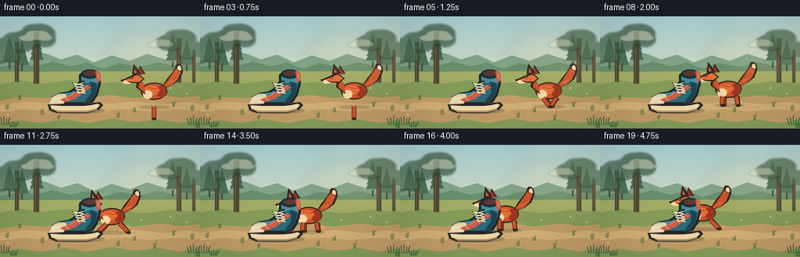
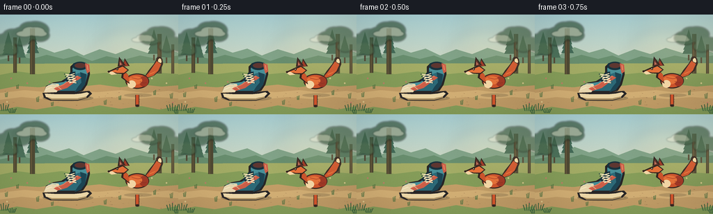
展开代码变化
--- 上一保存版本
+++ 本次保存版本
@@ -213,15 +213,17 @@
def fox_pose(frame):
if frame <= 3:
- return 193.0, 116.0, "idle", 0.0
+ return 197.0, 116.0, "idle", 0.0
if frame <= 12:
u = (frame - 3) / 9.0
u = u * u * (3 - 2 * u)
- return 193.0 - 48.0 * u, 116.0 - 3.5 * u, "run", u
+ return 197.0 - 56.0 * u, 116.0 - 3.5 * u, "run", u
+ # Stop with the body behind the shoe. The head clears its left edge and
+ # the raised tail clears its collar so the occlusion stays readable.
u = (frame - 12) / 7.0
u = u * u * (3 - 2 * u)
- x = 145.0 - 41.0 * u
- y = 112.5 - 8.5 * u
+ x = 141.0 - 10.0 * u
+ y = 112.5 - 4.5 * u
return x, y, "run", 1.0 + u
@@ -275,18 +277,19 @@
path[-1][0] + 2.7, path[-1][1] + 2.2), sock)
# Tail: thick curved silhouette with a pale tip.
- tail = p([(14, -24), (25, -29), (33, -40), (30, -49),
- (23, -47), (16, -35), (11, -27)])
+ tail = p([(14, -24), (24, -28), (33, -35), (37, -45),
+ (34, -53), (29, -54), (24, -45), (16, -35), (11, -27)])
polygon(d, tail, outline)
- tail_in = p([(14, -25), (24, -29), (30, -39), (28, -45),
- (24, -44), (18, -34), (12, -27)])
+ tail_in = p([(14, -25), (23, -28), (30, -35), (34, -44),
+ (32, -49), (29, -50), (24, -43), (18, -34), (12, -27)])
polygon(d, tail_in, fur)
- tail_hi = p([(17, -29), (24, -33), (28, -39), (24, -36), (18, -31)])
+ tail_hi = p([(17, -29), (24, -32), (30, -37), (28, -35), (18, -31)])
polygon(d, tail_hi, fur_light)
- tail_tip = p([(29, -45), (32, -48), (31, -52), (27, -53), (23, -50),
- (24, -47), (27, -45)])
+ tail_tip = p([(34, -45), (37, -46), (36, -52), (33, -55), (29, -55),
+ (27, -52), (29, -48)])
polygon(d, tail_tip, outline)
- tail_tip_in = p([(29, -46), (31, -48), (29, -51), (26, -50), (25, -48)])
+ tail_tip_in = p([(34, -46), (35, -48), (34, -52), (32, -53),
+ (30, -51), (30, -48)])
polygon(d, tail_tip_in, cream)
# Main body and haunch.
候选 03播放与检查图
点击播放 · 原生 RGB 像素
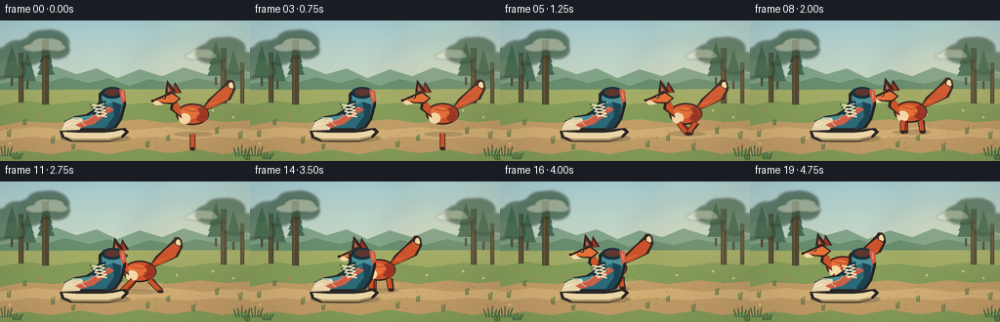
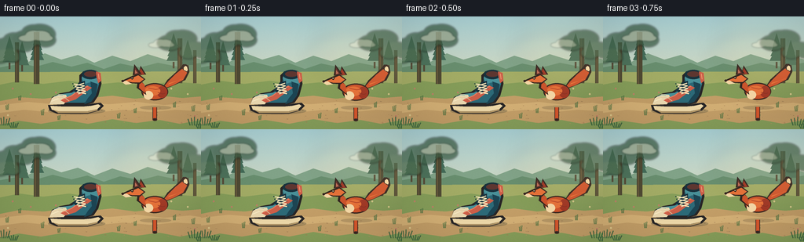
展开代码变化
--- 上一保存版本
+++ 本次保存版本
@@ -222,7 +222,7 @@
# the raised tail clears its collar so the occlusion stays readable.
u = (frame - 12) / 7.0
u = u * u * (3 - 2 * u)
- x = 141.0 - 10.0 * u
+ x = 141.0 - 46.0 * u
y = 112.5 - 4.5 * u
return x, y, "run", 1.0 + u
@@ -277,19 +277,19 @@
path[-1][0] + 2.7, path[-1][1] + 2.2), sock)
# Tail: thick curved silhouette with a pale tip.
- tail = p([(14, -24), (24, -28), (33, -35), (37, -45),
- (34, -53), (29, -54), (24, -45), (16, -35), (11, -27)])
+ tail = p([(14, -24), (24, -28), (39, -35), (44, -45),
+ (41, -53), (36, -54), (27, -45), (16, -35), (11, -27)])
polygon(d, tail, outline)
- tail_in = p([(14, -25), (23, -28), (30, -35), (34, -44),
- (32, -49), (29, -50), (24, -43), (18, -34), (12, -27)])
+ tail_in = p([(14, -25), (23, -28), (36, -35), (41, -44),
+ (39, -49), (36, -50), (27, -43), (18, -34), (12, -27)])
polygon(d, tail_in, fur)
- tail_hi = p([(17, -29), (24, -32), (30, -37), (28, -35), (18, -31)])
+ tail_hi = p([(17, -29), (24, -32), (36, -37), (32, -35), (18, -31)])
polygon(d, tail_hi, fur_light)
- tail_tip = p([(34, -45), (37, -46), (36, -52), (33, -55), (29, -55),
- (27, -52), (29, -48)])
+ tail_tip = p([(41, -45), (44, -46), (43, -52), (40, -55), (36, -55),
+ (34, -52), (36, -48)])
polygon(d, tail_tip, outline)
- tail_tip_in = p([(34, -46), (35, -48), (34, -52), (32, -53),
- (30, -51), (30, -48)])
+ tail_tip_in = p([(41, -46), (42, -48), (41, -52), (39, -53),
+ (37, -51), (37, -48)])
polygon(d, tail_tip_in, cream)
# Main body and haunch.
可观测工具轨迹
实际执行的命令与返回图片。
命令 1exit 0
/bin/bash -c "sed -n '1,240p' GENERATION_RULES.md"
命令 2exit 0
/bin/bash -c 'cat prompt.txt'
命令 3exit 0
/bin/bash -c 'cat task_spec.json'
命令 4exit 0
/bin/bash -c "find . -maxdepth 2 -type f -printf '%p\\n' | sort | sed -n '1,240p'"
命令 5exit 0
/bin/bash -c "command -v ffmpeg; command -v python3; python3 - <<'PY' mods=['PIL','numpy','cv2','imageio','matplotlib','torch','moviepy'] for m in mods: try: x=__import__(m) print(m, getattr(x,'__version__','ok')) except Exception as e: print(m, 'MISSING', type(e).__name__) PY"
命令 6exit 0
/bin/bash -c "sed -n '1,260p' artifact_io.py; sed -n '1,220p' player_template.html"
命令 7exit 0
/bin/bash -c 'MPLCONFIGDIR=.tmp/mpl python3 generate.py'
命令 8exit 0
/bin/bash -c 'mkdir -p candidates/candidate_01 && cp -r frames inspection.png transition_check.png pixels.npz index.html video.mp4 candidates/candidate_01/ && MPLCONFIGDIR=.tmp/mpl python3 generate.py'
命令 9exit 0
/bin/bash -c 'mkdir -p candidates/candidate_02 && cp -r frames inspection.png transition_check.png pixels.npz index.html video.mp4 candidates/candidate_02/ && MPLCONFIGDIR=.tmp/mpl python3 generate.py'
命令 10exit 0
/bin/bash -c "python3 - <<'PY'
from pathlib import Path
import json, cv2, numpy as np
from PIL import Image
p=Path('.')
spec=json.loads((p/'task_spec.json').read_text())
a=np.load(p/'pixels.npz')['pixels']
print('spec', spec)
print('pixels', a.shape, a.dtype, 'range', int(a.min()), int(a.max()))
files=sorted((p/'frames').glob('*.png'))
print('pngs', len(files), Image.open(files[0]).size, Image.open(files[0]).mode)
cap=cv2.VideoCapture(str(p/'video.mp4'))
print('mp4 opened', cap.isOpened(), 'frames', int(cap.get(cv2.CAP_PROP_FRAME_COUNT)), 'fps', cap.get(cv2.CAP_PROP_FPS), 'size', int(cap.get(cv2.CAP_PROP_FRAME_WIDTH)), int(cap.get(cv2.CAP_PROP_FRAME_HEIGHT)))
prev=None; diffs=[]
for i,f in enumerate(files):
im=np.asarray(Image.open(f).convert('RGB')).astype(np.int16)
if prev is not None: diffs.append(float(np.abs(im-prev).mean()))
prev=im
print('frame diffs', ' '.join(f'{d:.2f}' for d in diffs))
print('index bytes', (p/'index.html').stat().st_size, 'video bytes', (p/'video.mp4').stat().st_size)
PY"视觉工具实际返回图片 1

视觉工具实际返回图片 2
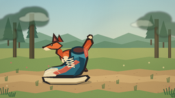
视觉工具实际返回图片 3
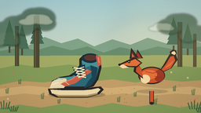
视觉工具实际返回图片 4
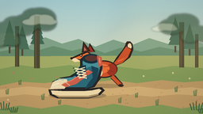
视觉工具实际返回图片 5

视觉工具实际返回图片 6
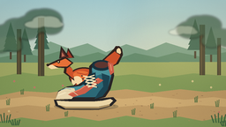
视觉工具实际返回图片 7
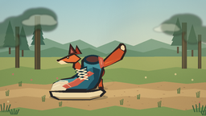
视觉工具实际返回图片 8

视觉工具实际返回图片 9

保存候选 3 份；完成命令 10 次；可验证图片返回 9 张。原始 API 响应与完整日志保留在本地。